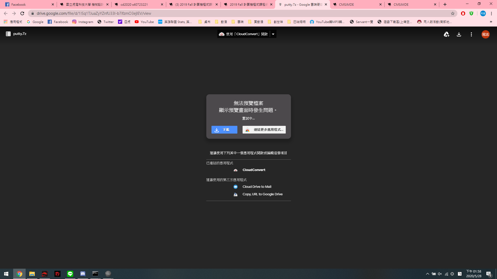
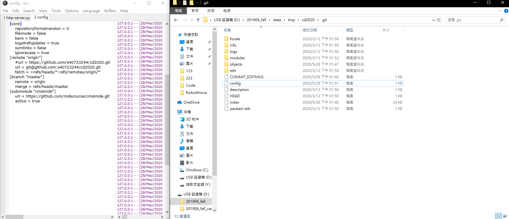
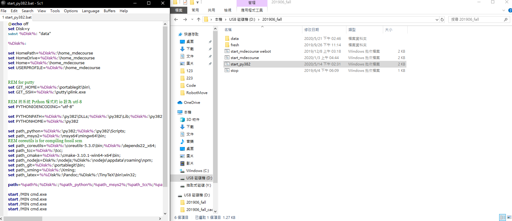
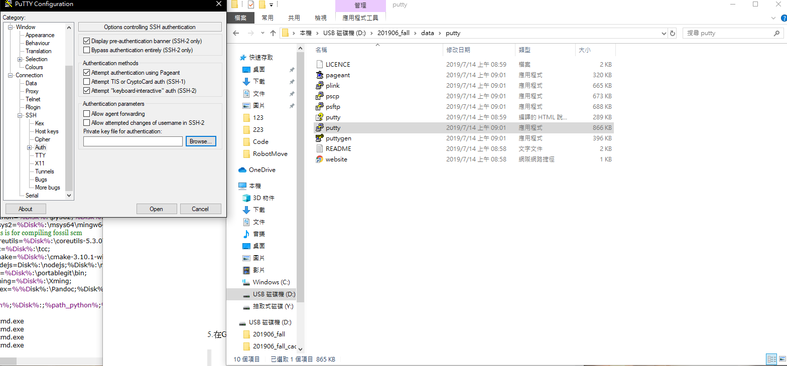
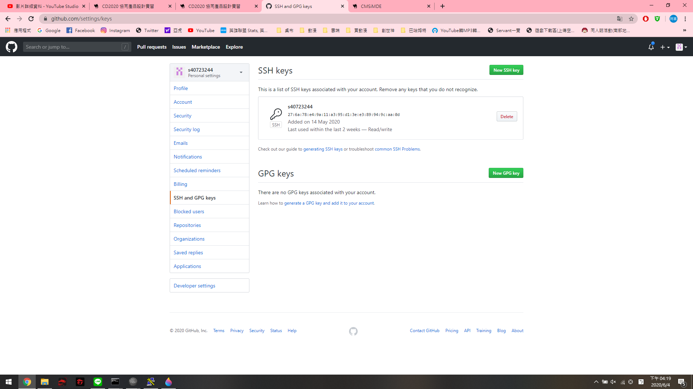
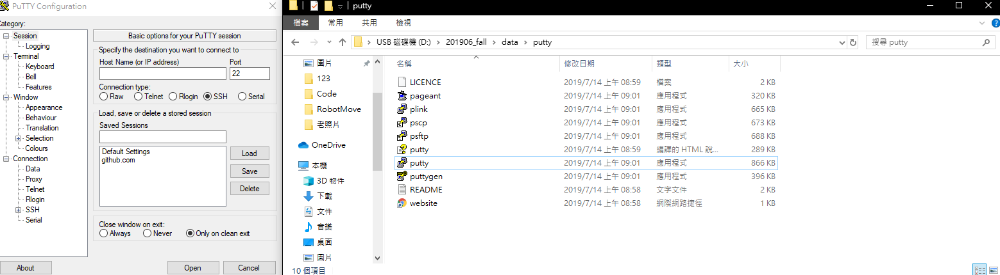

week6-9 <<
Previous Next >> Q&A
week10-14
week10
GOOGLE+ Domain API
1.登錄到您的@gm帳戶
2.連接到https://console.developers.google.com
3.接受許可並創建Google API項目
4.啟用Google的API
5.在Google Domain API憑據下，按設置同意按鈕按鈕
6.選擇內部或外部用戶類型並添加新的應用程序名稱
7.在“API和服務”下，進入“憑據”頁面
8.為Web應用程序創建“ OAuth 2.0客戶端ID”類型的憑據
9.(設置網址)授權的JavaScript為：https：// localhost：8443
10.定義URI為：https：// localhost：8443 / login / google /
11.將oauth_gm.txt保存中
12.開啟leo更改其中得config中的scrum為自己命名的txt檔案名稱，並且修改完成之後按下save和darwROC
13.pip install authomatic
14.開啟https://localhost:8443
15.測試是否可以成功運作
week11
確認是否具有SSH功能，以助於協同時使用
SSH建立步驟:
1.下載PUTTY

2.修改.git中的config設定

3.在啟動檔中新增兩行程式

4.利用PUTTYGEN建立URL

5.在GITHUB中加入剛剛創立的URL

6.利用PUTTY建立連線

week12
本周進度為設定ubnutu對外連線
week13
操作步驟:
1.點選檔案->喜好設定->網路->新增一個新的NAT網路。
2.編輯NAT網路->點選連接埠轉送->新增4個新的連接埠轉送埠號。
3.設定主機IP為127.0.0.1；客體IP為10.0.2.4；主機連接埠為22、19999、17443、18443；客體連接埠為22、19999、7443、8443。
4.點選設定->網路->設定主機網路為NAT Network。
5.設定完後，點選啟動，接著輸入密碼kmol2020。
6.開啟LXTermial，輸入ifconfig->輸入sudo apt install net-tools->輸入密碼kmol2020。
7.cd tmp->ls->輸入ping 127.0.0.1測試->cd cd2020pj1->git pull。
8.接著輸入sudo vi wsgi.py編輯內容，按i進行編輯。
9.將近端的host改為10.0.2.4，接著按Esc並輸入:wq存儲。
10.開啟leo，並開啟cd2020pj1.leo，點選Nav搜尋allowExt。
11.點選fileuploadfrom，並將第10行新增一個ttt檔，完成後存儲並關閉leo。
12.cd..,接著在tmp下新增oauth_scrum.txt，輸入sudo vi oauth_scrum.txt。
13.按i編輯，內容先隨便輸入，接著按Esc並輸入:wq存儲。
14.cd cd2020pj1，並輸入python3 wsgi.py啟動。
15.網址為https:/127.0.0.1:18443/alogin。
16.帳號及密碼都為admin，進入後點選fileuploadform，點選要上傳的ttt檔。
17.點選download list檢查檔案是否上傳完成。
18.完成。
week14
操作步驟:
1.在搜尋輸入cmd開啟命令窗。
2.輸入ipconfig來查看IPv4的IP。
3.將虛擬主機的整體系統埠號中的主機IP改為個人IPv4的IP。
4.啟動Ubuntu並開啟XLaunch.exe。
5.另一台主機開啟putty，並輸入遠端連線的IP。
6.設定SSH下的X11，將Enable X11 fowarding打勾並在X display location中輸入localhost:0.0。
7.存儲後再啟動即可連線到該主機，帳號及密碼輸入kmol2020。
8.輸入xterm&，並進入cd2020pj1。
9.git pull檢查版本，在進入docs及cmsimde。
10.輸入vi wsgi.py編輯(按i編輯)。
11.將近端的host改為10.0.2.4。
12.按Esc並輸入:wq存儲。
13.輸入python3 wsgi.py，網址為該主機IP加上17443(https://主機IP:17443)。
14.完成。
week6-9 <<
Previous Next >> Q&A